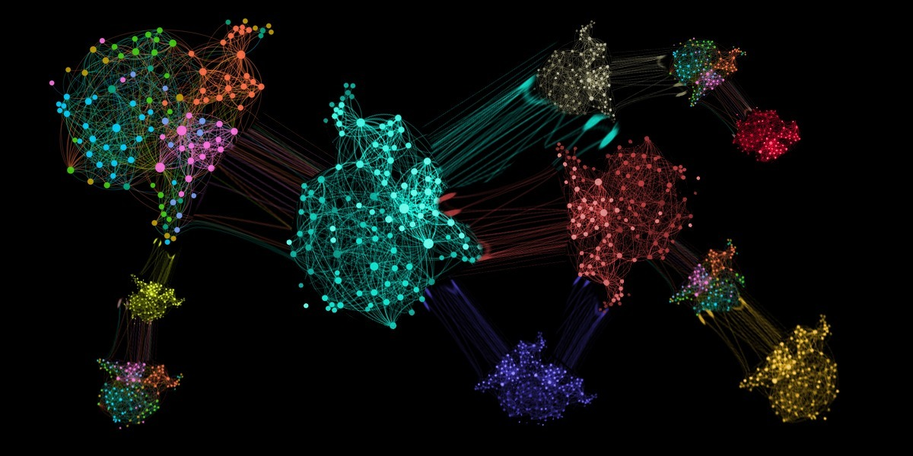

 ### Whether you’re a seasoned data scientist or a curious enthusiast, understanding the basics of clustering algorithms can open doors to a deeper comprehension of how data organizes itself. In this post, we will cover cluersting algorithms and their applications.
What is clustering?
Data clustering is a method used in machine learning to organize large datasets into distinct groups or clusters. The goal is to group data points based on similarities and reveal patterns that might not be obvious at first.
How is clustering used?
Clustering is used in a wide variety of applications, including:
Customer Segmentation: Identifying groups of customers with similar preferences helps businesses tailor marketing strategies more effectively.
Image and Signal Processing: Grouping similar pixels in an image or patterns in signals aids in image recognition and signal analysis.
Anomaly Detection: Detecting unusual patterns or outliers in a dataset, which can be indicative of errors or potential threats.
Biology and Genetics: Classifying genes based on similar expressions or grouping biological specimens for research purposes.
Document Clustering and Search Engines: Organizing large document collections by topic or theme for efficient information retrieval.
K-Means Algorithm
K-Means clustering is an unsupervised machine learning algorithm used to organize a dataset into distinct clusters. It is a simple algorithm with the folowing steps:
- Initialize: Randomly select
kdata points/instances as initial centroids. - Assign: Calculate the distance of each data point/instance to each centroids and assign each point (the instance label) to the cluster with the nearest centroid.
- Update: Recalculate the mean of the data points in each cluster and update the centroids.
- Repeat: Iterate through steps 2 and 3 until the centroids stabilize.
Advanatages and Limitations
The simplicity of K-means makes it efficient and capable of handling large datasets. It also scales well as the number of data points grows. However, there are some limitations. The algorithm is guaranteed to converge, but it might not converge to the right solution. The outcome is influenced by the centroids that were randomly chosen during the initialization step. Moreover, k-means does not behave very well when the clusters have varying sizes, different densities, or nonspherical shapes.
Improvements
One imrovement to limit the influence of the inintial centroids is to run the algorithm multiple times with different initializations and keep the best one. The best solution is determined by the model’s inertia (the sum of the squared distances between the instances and their closest centroids). A lower interia means a better model.
Another improvement, k-means++, selects centroids that are far from one another to lessen the likelyhood that the algortithm converges to a suboptimal solution. This improvement drastically reduces the number of times the algorithm needs to be run to find the optimal solution.
A third improvement by Charles Elkan accelerates the algorithm by avoiding many unnecessary distance calculations. Howver, depending on the dataset, this implementation may actually slow down the trainig instead of mkaing it faster.
A fourth improvement by David Sculley uses mini-batches instead of the full dataset at each iteration. This method makes it possible to cluster datasets that do not fit in memory.
How to determine the number of clusters
To determine the optimal number of clusters (k), we use the silhouette score. An instance’s silhouette score is equal to (b – a) / max(a, b), where a is the mean distance to the other instances in the same cluster and b is the mean nearest-cluster distance. The silhouette score can ranges between –1 and +1. A score close to +1 means that the instance is well inside its own cluster and far from other clusters, while a score close to 0 means that it is close to a cluster boundary. A score close to –1 means that the instance may have been assigned to the wrong cluster.
DBSCAN
DBSCAN (Density-Based Spatial Clustering of Applications with Noise) is a another clustering algorithm. It identifies clusters in a dataset based on the density of the data points. Unlike K-Means, DBSCAN doesn’t require specifying the number of clusters beforehand and is better suited for irregularly shaped clusters. The algorithm classifies datapoints as core, border, or noise.
Core Points: A data point that has at least the minimum number of data points within a defined radius (a neighborhood). All data points in the neighborhood belong to the same cluster.
Border Points: A data point that is within the neighborhood of a core point but does not have enough neighbors to be considered a core point.
Noise Points: Data points that are neither core points or border points.
Advanatages and Limitations
DBSCAN is capable of identifying any number of clusters of any shape, and it is not senistive to outliers. However, if the density varies significantly across the clusters, or if there’s no low-density region around the clusters, DBSCAN may struggle to identify the clusters. This algorithm also does not scale well to large datasets.